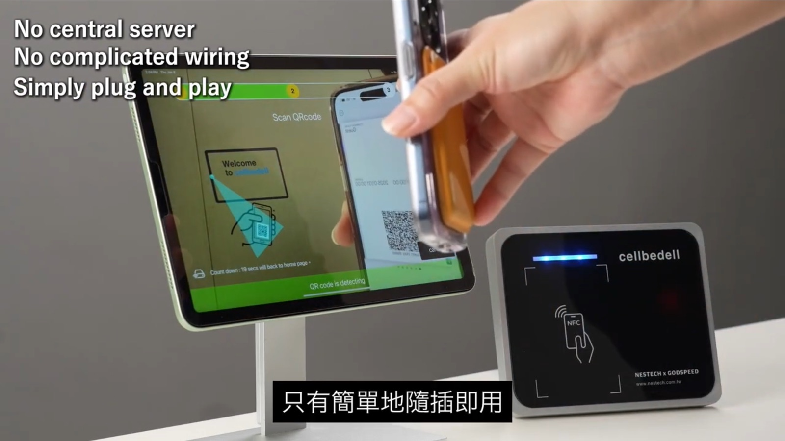
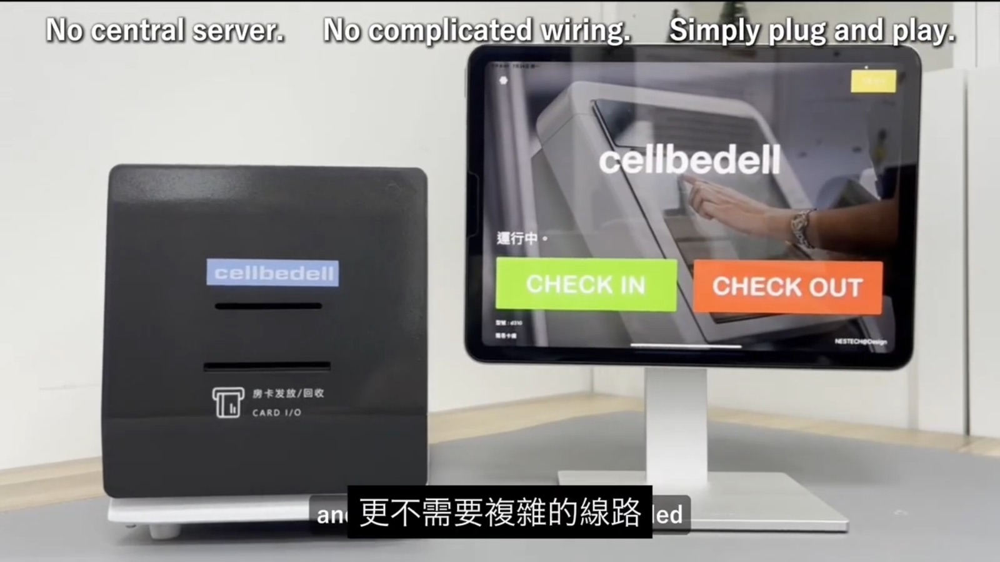
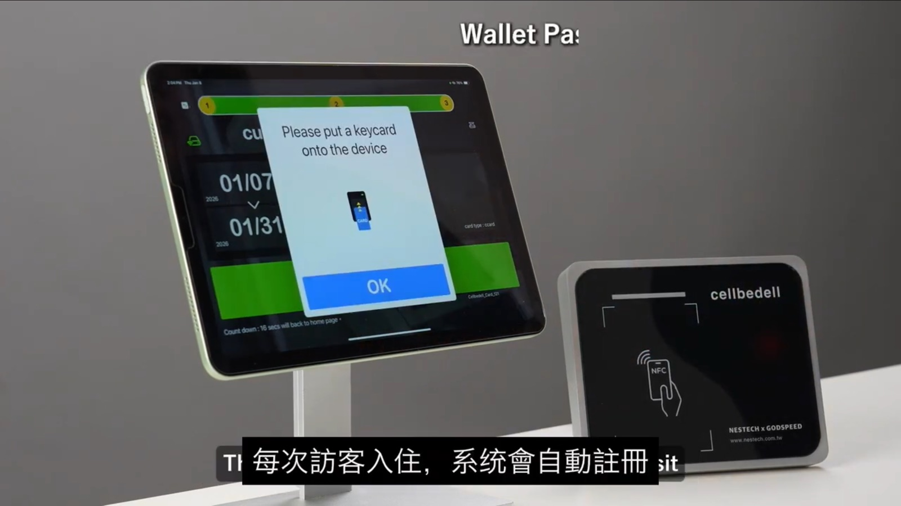

旅客完成訂房後，很多旅宿會把「入住」想成抵達櫃台後才開始的事情。但在智慧入住裡，真正決定現場順不順的，往往是旅客抵達前資料有沒有先整理好。
Cellbedell 採用的流程，是讓旅客先在手機或電腦上完成 pre check-in。旅客可以確認訂單、補齊身份資料、完成付款或押金授權，並取得對應的金鑰或通行憑證。等旅客抵達現場後，系統不需要每一步都重新呼叫雲端；現場邊緣設備可以先完成必要驗證，Kiosk 確認後就能發放對應房卡。
這裡的重點是：Cellbedell kiosk 是 plug & play 架構，不需要中央主機，也不需要另外部署 host PC。旅宿現場不必為了一台自助櫃檯再拉複雜線路或放一台電腦在旁邊；設備接上後，就能和 PMS API、發卡機、QR Code、Wallet Pass、NFC 卡與門禁權限一起作動。
Pre check-in 不是線上表單，而是入住任務的前半段
很多人聽到 pre check-in，會以為只是把旅客資料提早填完。這當然是其中一部分，但真正重要的是：旅宿能不能在旅客抵達前，把「可以入住」這件事所需要的條件先整理好。
訂單是否存在？入住日期是否正確？身份資料是否齊全？付款或押金是否完成？房型、房號與房務狀態是否可以支援自助入住？這些資料如果沒有先被整理，旅客到了現場，Kiosk 只會變成另一個需要排隊解題的螢幕。
好的 pre check-in 應該讓旅客抵達現場時只做確認，而不是重新開始。
抵達前應該先準備好的 6 種資料
在 PMS x Kiosk 的流程裡，旅客抵達前至少有六類資料應該先被整理好。
- 訂單資料：訂單號、姓名、入住日期、房型、人數與訂房來源。
- 身份資料：姓名、電話、Email、證件資料與必要入住聲明。
- 付款資料：房費、押金、預授權、退款規則與加購項目。
- 抵達資料：預計抵達時間、晚到備註、語言偏好與同行旅客。
- 房務資料：房間是否已清潔、是否可入住、是否需要換房。
- 通行資料：房卡、QR Code、手機金鑰、有效時間與門禁範圍。
這些資料不一定都要旅客自己輸入。PMS 裡已經有的資料，應該透過 API 帶出來；需要旅客確認的內容，才放到 pre check-in 頁面或 Kiosk 上處理。這樣流程才會有「減少摩擦」的效果，而不是把櫃台工作搬給旅客。
付款與金鑰完成後，現場就不該再從頭確認

如果旅客已經在手機或電腦上完成 check-in、付款與身份確認，現場流程就應該更像「驗證與取卡」，而不是「重新報到」。
這裡的關鍵是金鑰或通行憑證。當旅客完成線上流程後，系統可以先產生對應的權限任務，例如手機金鑰、QR Code、臨時通行憑證，或待現場發放的房卡。旅客抵達後，Kiosk 只需要確認旅客身份、訂單狀態與授權條件是否仍然有效。
一旦條件符合，Kiosk 就可以觸發現場設備發放房卡。旅客看到的是簡單的一個確認步驟，背後其實是 PMS、付款狀態、門禁權限與發卡設備已經先排好隊。
邊緣驗證讓現場不被雲端連線綁住

旅宿現場最怕的不是科技不夠漂亮，而是關鍵時刻不能作動。旅客已經完成付款、也拿到憑證，結果到現場因為網路不穩而無法驗證或發卡，這會讓智慧入住瞬間變成更糟的服務體驗。
所以 Cellbedell 的架構會把關鍵驗證放到現場邊緣設備。雲端負責同步資料、管理紀錄與更新狀態；但到場後的基本驗證、房卡發放或通行判斷，可以由本地設備依照已授權資料完成。即使短時間斷網，也不會讓旅客卡在大廳或門口。
這也是 plug & play 對旅宿現場真正有意義的地方。它不是只表示「安裝比較快」，而是代表設備本身就能承擔現場任務，不需要再依賴一台中央電腦做中介。PMS 透過 API 把訂單、房號、入住時間與權限條件送進來，現場的 kiosk、發卡機與門禁設備就能依規則執行。
這不是把雲端拿掉，而是讓雲端和現場各自做適合的事情。雲端做管理，邊緣設備做執行；PMS 提供資料，Kiosk 負責旅客確認；發卡機與門禁設備則把權限變成真的可以進房。
Kiosk 的角色，是確認後發卡，不是重新收集資料

現場 Kiosk 最好的角色，不是再問旅客一次所有問題，而是把已經完成的 pre check-in 結果拿來做最後確認。
旅客可以在 Kiosk 上輸入訂單、掃描 QR Code、感應手機憑證，或用其他方式確認身份。系統確認訂單有效、付款完成、房間可入住、權限未過期後，就可以發放對應房卡。若出現例外，例如付款未完成、房務尚未放行、身份資料缺漏，Kiosk 則應該把狀態交給櫃台或客服，而不是讓旅客卡在不知道下一步的畫面。
這樣的設計，讓 Kiosk 從「資料收集機」變成「現場任務確認點」。它不是取代櫃台，而是把標準流程處理掉，讓人可以留給真正需要判斷的場景。
對旅客來說，這個流程可以很直覺：掃描 QR Code、感應 Wallet Pass 或 NFC 卡，確認資料後拿到房卡。對管理者來說，系統則會同步留下紀錄，知道哪一位旅客在什麼時間完成入住、哪一張卡被發出、哪一組權限被啟用。
對中小旅宿來說，先把資料準備好，比先買大設備更重要
很多中小型旅宿導入智慧入住時，第一個想到的是 Kiosk 要多大、螢幕要多漂亮、設備要不要放在大廳。但更實際的第一步，是先確認資料流有沒有整理好。
如果 PMS API 可以提供訂單、付款、房號、入住時間與旅客狀態，現場設備就有機會把這些資料變成可執行的任務。反過來，如果資料還散在不同系統裡，就算買了大型 Kiosk，現場仍然要人工確認。
因此，真正適合中小旅宿的智慧入住，不一定是越大台越好，而是部署越輕、現場越穩、整合越清楚越好。無主機、無 host PC、低佈線門檻的 plug & play kiosk，讓旅宿可以先把 pre check-in、現場驗證與發卡流程跑起來，再逐步延伸到手機金鑰、門禁權限與 AI agent 任務。
智慧入住真正的起點，不是機器站在哪裡，而是旅客抵達前，系統是否已經知道他是誰、住哪裡、能不能入住、該拿哪一張卡，以及遇到例外時要交給誰處理。當這些問題先被整理好，pre check-in 才會從一張線上表單，變成一段真的更順的入住體驗。